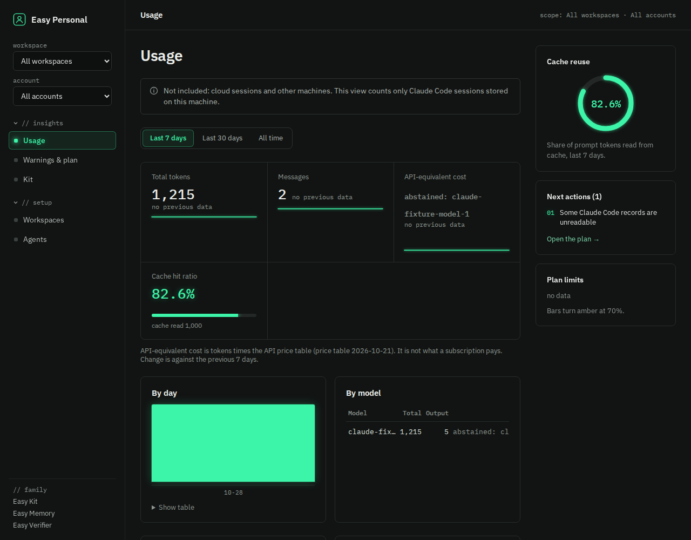
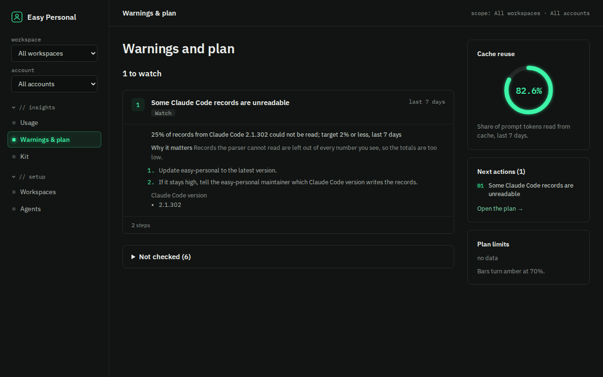
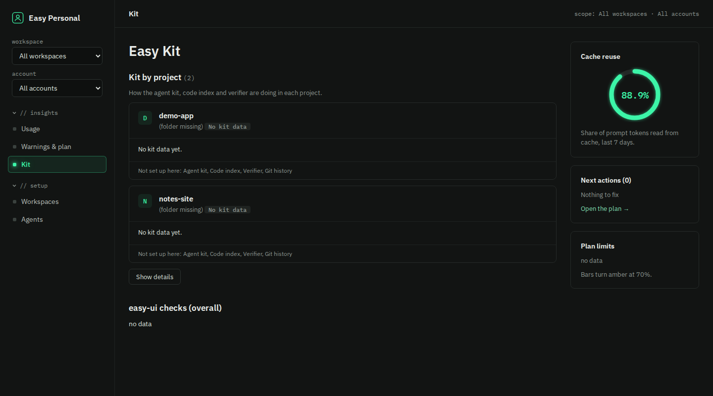
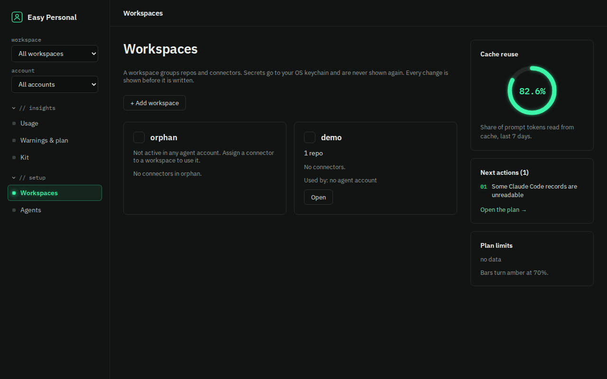

> usage numbers for claude code
Easy Personal
The Easy Kit plug-in about you, not a repo: it turns your local Claude Code activity into usage numbers, warnings and an improvement plan, and manages your personal tool connectors.
Everything runs on your machine. It reads metadata only: token counts, model, time, project folder and tool names. It never stores message text. A kit part is one of the Easy Kit tools that leave files for it to read: the kernel, easy-verifier, easy-ui or easy-context.
git clone https://github.com/thunderkds/easy-personal-mcp.git cd easy-personal-mcp npm --prefix web ci && npm --prefix web run build uv tool install --reinstall --no-cache .
- 10MCP tools
- 5connector providers
- 5dashboard views
The flow
There are two lanes. The first lane reads your activity. To ingest is to copy metadata into the store. The second lane connects a tool to Claude Code. A connector is a provider, such as Slack, set up for Claude Code with its secrets kept in the OS keychain. The launcher is the small command that Claude Code starts for a connector.
Read
Files are only read, never changed. Nothing leaves your machine.
- transcripts + kit reportsClaude Code session files and the files that kit parts leave behind.
- ingestCopy metadata into the store. Message text is dropped.
- local storeOne SQLite file on your disk. It keeps history after Claude Code deletes old sessions.
- MCP · CLI · dashboardThree ways to read the same numbers. The dashboard listens on 127.0.0.1 only.
Connect
A secret goes to the keychain once. It is never in a config file or a command line.
- catalog formPick a provider and fill in its fields, in the dashboard or the CLI.
- OS keychainThe secrets are saved in the keychain of your operating system.
- claude mcp add-jsonThe official Claude Code command registers
easy-personal-launch exec <id>. - launcherIt reads the keychain and passes the secrets to the provider server as environment variables.
The dashboard
Run easy-personal dashboard to open it. These screenshots use test fixtures, not real usage. The projects demo-app and notes-site are made up.




Install and deploy
You need Python 3.11 or newer, uv and Node.js. The dashboard page is built from web/ and is not in git, so build it before you install. It runs natively on Linux.
Install
git clone https://github.com/thunderkds/easy-personal-mcp.git cd easy-personal-mcp npm --prefix web ci && npm --prefix web run build uv tool install --reinstall --no-cache .
Check the install:
easy-personal --version easy-personal ping
First run
Claude Code deletes old transcripts after 30 days, so ingest often.
easy-personal ingest easy-personal usage easy-personal warnings easy-personal plan
Register the MCP server
Then restart Claude Code. The server speaks stdio by default.
claude mcp add --scope user easy-personal -- easy-personal mcp
Open the dashboard
It runs an ingest, then starts the page on 127.0.0.1 with a new token each time. Press Ctrl-C to stop.
easy-personal dashboard
Schedule
A systemd user timer runs ingest every day.
easy-personal schedule install easy-personal schedule remove
Connectors
Needs the claude CLI on PATH and a keychain backend. Restart Claude Code after a change.
easy-personal connector list easy-personal connector add slack --workspace company easy-personal connector remove slack easy-personal doctor
Upgrade
Always use --reinstall --no-cache. Without it, uv can reuse an old build of the same version.
git pull npm --prefix web ci && npm --prefix web run build uv tool install --reinstall --no-cache .
Roll back
Back up the store before an upgrade:
cp -p ~/.easy-personal/store.sqlite ~/.easy-personal/store.sqlite.backup
To roll back, remove your connectors and the timer, uninstall the tool and restore the store:
easy-personal connector remove slack easy-personal schedule remove uv tool uninstall easy-personal-mcp cp -p ~/.easy-personal/store.sqlite.backup ~/.easy-personal/store.sqlite
The full deploy, health check and rollback steps, and the common failures, are in the runbook.
Ten MCP tools
None of them writes config or returns a secret.
| tool | what it does |
|---|---|
ping | Check that the server is up. |
usage_summary | Sessions, messages and tokens for a period. |
usage_breakdown | Tokens grouped by day, model, project or tool. |
session_outliers | Sessions with very many tool calls or a very long context. |
warnings | Rules that fired, each with its measured value. |
improvement_plan | The fired rules by priority, each with a fix line. |
kit_summary | What the Easy Kit did in each project. |
connector_catalog | The provider catalog. Never a secret value. |
connector_status | Whether each connector is set up, as yes or no. |
connector_suggestions | Providers your usage points to, with the counts behind each. |
Connector catalog
The catalog has five providers. Yes means Claude.ai has an official connector too. Use the launcher only if you want it instead.
- Gmailclaude.ai connector: yes
- SendGridclaude.ai connector: no
Messaging
- Discordclaude.ai connector: no
- Slackclaude.ai connector: yes
- Teamsclaude.ai connector: yes